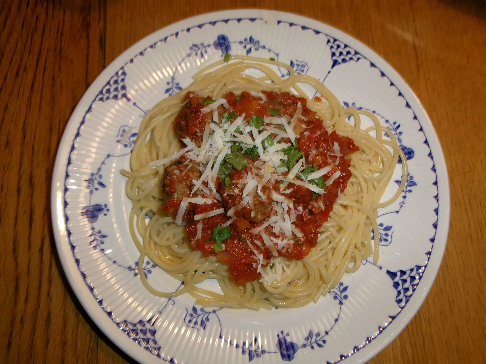

Spaghetti Meatballs

Ingredients
Meatballs
- 400g minced beef
- 3-4 slices white bread
- 3/4 dl water
- 1 tsp. salt
- 1/2 tsp. black pepper
- 1 egg
- 2 garlic cloves
- 1 dl fresh parsley, chopped
- 2 dl parmesan cheese, grated
Sauce
- 1 onion
- 2 garlic cloves
- 2 paprikas
- 1 can chopped tomatos
- 1 can tomato passata
- 2 tsp. basilika
- salt and pepper
Steps
Meatballs
- Warm the oven at 180°C, fan
- Cut the crust of the bread and tear the bread into a bowl. Pour the water over it and let it stand for about 5 minutes.
- Add the rest of the ingredients to the bowl and mix well.
- Shape into medium-sized meatballs and place on a baking sheet
- Put the meatballs into the oven for 20 minutes.
Sauce
- Chop the onion, garlic and paprika's and cook with some olive oil in a large pan or a pot until soft.
- Add the tomato passata and chopped tomatoes and season with basil, salt and pepper and let it simmer for about 10 minutes.
- When the meatballs are ready, add them to the sauce
- Serve with Spaghetti